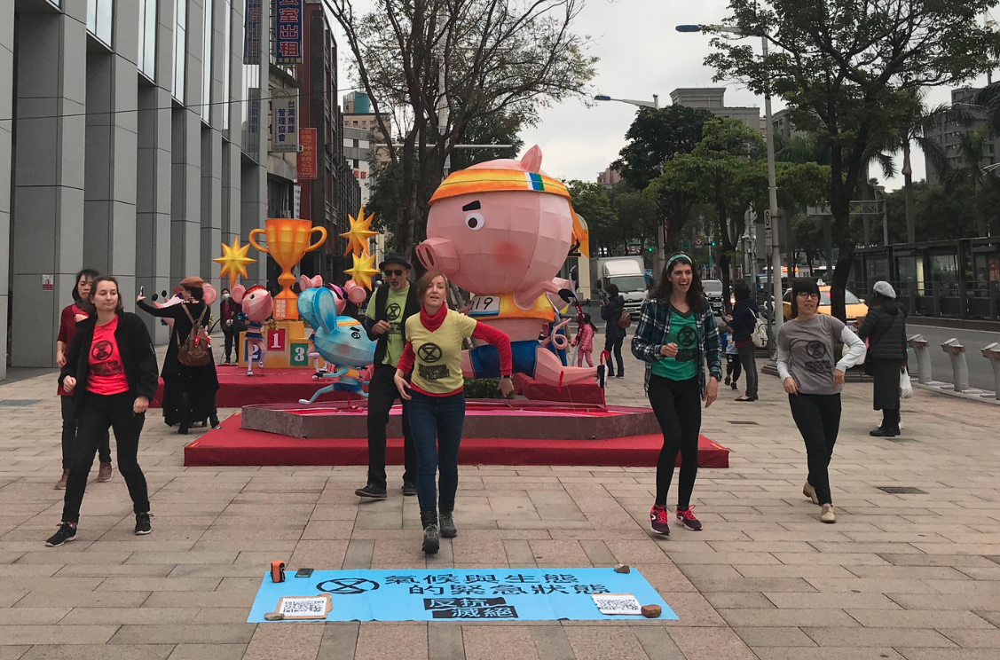
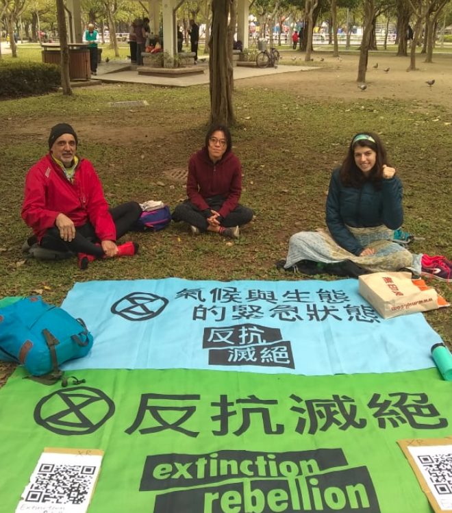

中文
能夠記取初衷總是好的。我們奮鬥的理由是什麼。有時我們會因為生活忙碌而忘記這些。因為工作繁忙或生活中的其他承諾， 我們也許無法參與活動。但是還是要記得鼓舞我們行動的初衷。
請觀賞以下的短片 ( Link)：生命的守護者。這是Amazon Watch和反抗滅絕的聯合製片。
氣候及生態的緊急狀態已經影響了數百萬人。再不採取行動，事態只會持續地惡化下去。
本週的最新消息
2019新型冠狀病毒的疫情讓很多台灣人感到不安。然而，隨著地球的快速暖化，更多的疾病將陸續出現。 過去幾世紀以來都被冰封在冰原或永凍層的細菌和病毒原本是處於長年休眠的狀態，隨著地球的暖化，他們或將復活。
「永凍土將微生物及病毒保存得很好，因為它很冷、沒有氧氣，而且陰暗。」演化生物學家Jean-Michel Claverie在法國的艾克斯-馬賽大學表示。會傳染給人類或動物的病原型病毒可能被保存在古老的永凍層裡， 包括那些曾經引發全球傳染疫情的病毒。
如果再不趕快採取行動，跟未來將被釋放出來的病毒相比，現在這波對新型冠狀病毒的恐懼根本不算什麼！
近期活動回顧
上週末我們不只辦了一場，而是兩場活動。謝謝所有前來參與的反抗者們。週六，我們舉辦了第一場的“迪死不從”閃舞活動。 從反抗滅絕在澳洲的原創行動得到靈感，我們決定走上街頭，自己跳跳看。

第二個活動是在大安森林公園的靜思冥想活動。反抗者們在公園裡坐著冥想。

謝謝所有前來參加的朋友們。
活動預告
在公園靜思冥想
歡迎來參加另一場在公園的美妙的靜思冥想。
日期：2020年2月15日
時間：上午10點
地點：大安森林公園捷運站出口二（外面）
淨灘活動

下次淨灘地點將在八里，從淡水搭個小渡輪就到了！淨灘完歡迎大家跟我們一起享用以素食為主的美味午餐。:) 我們將在淡水捷運站出口一會合，再一起走過去。
日期: 2/22/20
時間: 10am-2pm
期待下次再見。
反抗滅絕在台灣
ENGLISH
It is always good to look at why we are doing this. What is the reason that we are fighting. Sometimes, it is easy to forget and get absorbed in the day to day. It may be hard to get to the actions due to work or other commitments. But, we must remember why we act.
Please watch this video, Guardians of Life, in partnership with Amazon Watch and Extinction Rebellion
The climate and ecological emergency is already affecting millions. Without action, it will only continue to get worse.
Latest News This Week
The 2019-nCoV is causing large amounts of distress for many Taiwanese. However, as the planet warms rapidly, more diseases will appear. Long-dormant bacteria and viruses, trapped in ice and permafrost for centuries, are reviving as the Earth's climate warms.
"Permafrost is a very good preserver of microbes and viruses, because it is cold, there is no oxygen, and it is dark," says evolutionary biologist Jean-Michel Claverie at Aix-Marseille University in France. "Pathogenic viruses that can infect humans or animals might be preserved in old permafrost layers, including some that have caused global epidemics in the past."
The fear of this virus is nothing compared to what will be unleashed in the future if we don't ACT NOW!
Recent Actions
This weekend we did not one, but two actions. Thank you to all the rebels that came. On Saturday we had our first 'Discobedience'. Inspired by the original action by XR Australia, we decided to take to the streets and try it for ourselves.
The next action was a meditation in Daan Park. Rebels sat in the park in quiet meditation.
Thank you to everyone who came and participated!
COMING-UP ACTIONS
Meditation in the Park
Please come and join us for another nice meditation in the park!
Day: 2/15/20 Time: 10am Location:Daan Park MRT Exit 2 (outside)
Next beach clean-up!
Our next clean-up will be in Bali, just a ferry ride away from Damsui! Feel free to join us for a tasty plant-based lunch after. :) We will meet at Damsui MRT Exit 1 and walk over together.
Day: 2/22/20 Time: 10am-2pm
Until next time,
XR Taiwan